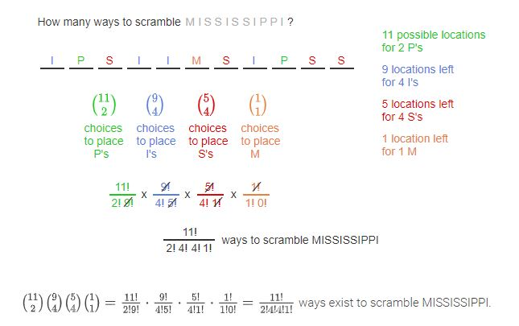

Instead of previous counts where the order doesn't matter, permutations means that the order
matters.
r-permutations - permutations of length r taken from the same set without
repetitions.
The generalized product rule is used here. If you are finding 4-permutations of a set of 10 items, then you have different possibilities.
permutation (without the leading "r-") is a sequence that contains every element of a finite set exactly once.
Formulas:
Combinations (or subsets) - counting from a group when the order doesn't
matters.
In order to count subsets/combinations, use the 3rd formula from the lesson above.
In the binomial it's read: "n choose r", or "from the set n, choose r choices for the subset"
Identity for combinations
In other words, "12 choose 8"
"12 choose 4"
(Just exercises for the above two sections)
Sometimes in permutations, a value will be repeated and the order will not matter for any
repeated outcome.
For example, the string "Good", and "Good" are different (the two
"o"s are swapped) but it doesn't matter since the outcome is the same.
This is called permutation with repetition.
Useful illustation:
